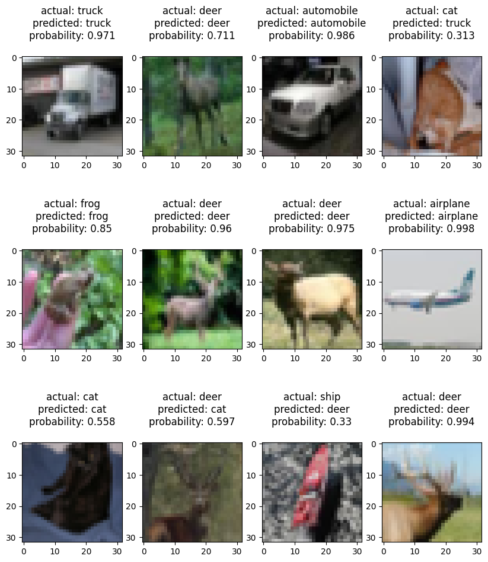
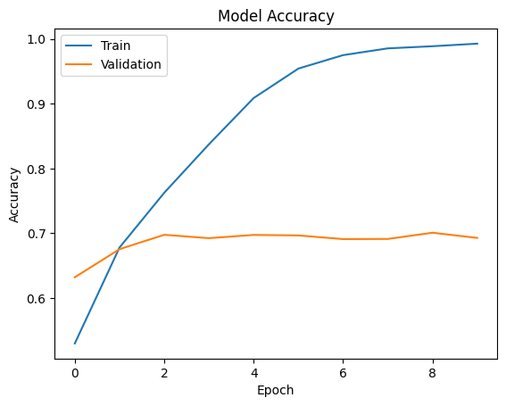
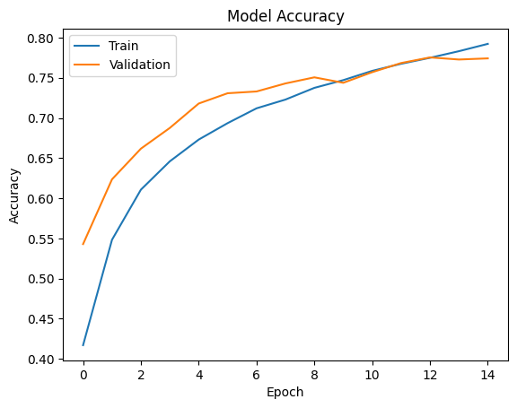
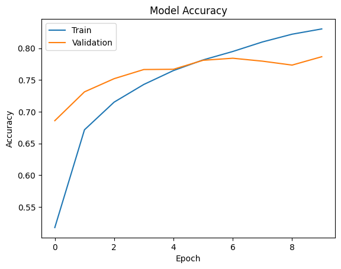
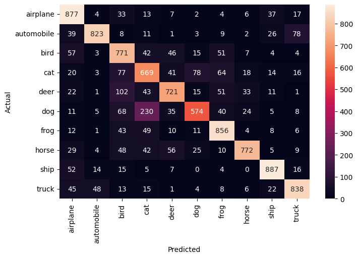
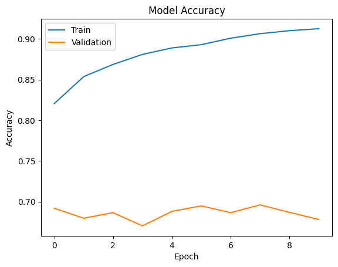

Overview
The goal is to teach a computer to look at a small photo and correctly name what object it shows.
- CIFAR-10 is a benchmark image dataset spanning 10 everyday object classes used to train and test computer vision models.
- Objective: build a model that takes a tiny 32x32 color image and predicts which of the 10 categories it belongs to.
- Image classification is a core deep learning task that powers vision systems in self-driving, search, and tagging.
- Approach: build a convolutional neural network (CNN) from scratch, then apply transfer learning to push accuracy higher.
Methodology
flowchart LR A[Image Dataset] --> B[Resize / Normalize / Augment] B --> C["CNN: Conv + Pooling layers"] C --> D[Dense + Softmax] D --> E[Train w/ Early Stopping] E --> F["Evaluate: Accuracy and Confusion Matrix"]
The Data (10 Classes)
The dataset holds 60,000 labeled photos split across ten common object types like planes, cats, and trucks.
- 10 classes: airplanes, cars, birds, cats, deer, dogs, frogs, horses, ships, and trucks.
- 50,000 training images and 10,000 test images, loaded directly from the Keras library as NumPy arrays.
- Each image is a 32x32 grid of pixels with 3 color channels (R, G, B), stored as a 4-dimensional array.
- Labels arrive encoded as numbers (e.g. 6 = frog), mapped to readable category names for interpretation.

Sample Images & Preprocessing
Before training, the raw pixel values are rescaled and the labels reformatted so the network can learn efficiently.
- Random sample images are reconstructed from NumPy arrays with matplotlib's imshow to inspect the data.
- Pixel values range 0-255, so every pixel is divided by 255 to normalize inputs to a 0-1 scale.
- Normalization speeds up training, reduces the chance of getting stuck at local optima, and stabilizes weights.
- Targets are one-hot encoded into 10 columns so the output layer can produce a probability per class.

CNN Architecture
A network of stacked layers learns visual patterns, refined across several versions to fix overfitting.
- The first CNN, built sequentially with LeakyReLU activation, trained 2,105,066 parameters but heavily overfit.
- Compiled with categorical cross-entropy loss and accuracy as the metric for this multi-class problem.
- Dropout layers were added to curb overfitting, then more convolutional plus max-pooling layers cut parameters ~50%.
- The third iteration solved overfitting and gave generalized performance with strong validation accuracy.
- Transfer learning then reused pre-trained VGG16 (14.7M+ frozen parameters) to boost accuracy faster.


Results & Accuracy
The best model correctly identifies about four out of five unseen photos, performing consistently on new data.
- Transfer learning with VGG16 delivered the best validation accuracy without training any convolutional layers.
- The final model reached about 79% accuracy on the held-out test data.
- Test accuracy closely matched validation accuracy, confirming the model generalizes rather than memorizes.
- Recall varied across classes, meaning the model identifies some objects well but struggles with others.
- A confusion heatmap reveals which class pairs are most often mixed up in the predictions.


Key Takeaways
Combining a custom-built network with a pre-trained one produced an accurate, well-generalizing image classifier.
- A from-scratch CNN can classify CIFAR-10's 10 object classes once overfitting is controlled with dropout and pooling.
- Iterative architecture changes mattered more than raw parameter count for improving generalization.
- Transfer learning from VGG16 achieved the strongest results with far less training of the convolutional base.
- The final classifier reached ~79% test accuracy, comparable to its validation performance.
- Built with: Python, TensorFlow, Keras (VGG16), NumPy, Matplotlib, and scikit-learn.
More Visualizations

Tech Stack
- numpy — fast numerical arrays
- scikit-learn — modeling, pipelines, and evaluation
- seaborn — statistical visualization
- matplotlib — plotting
- tensorflow — deep-learning framework
- keras — high-level neural-network API
Attribution
This project was completed as part of the MIT Applied Data Science Program (MIT IDSS / Great Learning). The program provided the case-study scaffolding; the analysis, code, and results are my own. Published with permission, for portfolio use only.